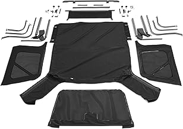
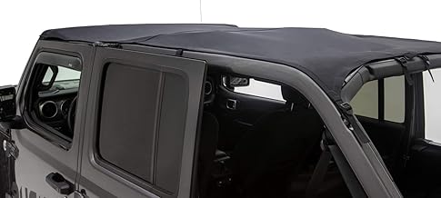
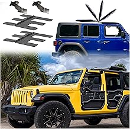
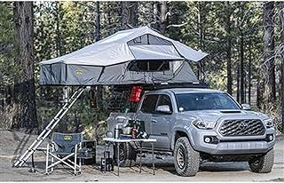

Bestop Sunrider Soft Top JLU — Top rated
Bestop Sunrider Soft Top JLU — Top rated Rampage Products Complete Soft Top JLU — Editor's pick
Rampage Products Complete Soft Top JLU — Editor's pick Rugged Ridge Hard Top JLU — Great value
Rugged Ridge Hard Top JLU — Great value Mopar Freedom Top JLU — Editor's pick
Mopar Freedom Top JLU — Editor's pick Smittybilt Overlander Roof Top Tent — Top rated
Smittybilt Overlander Roof Top Tent — Top ratedMay 2026
If you've been researching jlutops lately, you know the market changed a lot in 2026. New options, shifting prices, and plenty of noise to cut through.





⭐ 4.5 · $1,364.63
⭐ 4.5 · $349.99
⭐ 4.6 · $289.99
⭐ 3.8 · $703.76
⭐ 4.7 · $849.99
Bestop Sunrider Soft Top JLU — Top ratedRampage Products Complete Soft Top JLU — Editor's pickRugged Ridge Hard Top JLU — Great valueMopar Freedom Top JLU — Editor's pickSmittybilt Overlander Roof Top Tent — Top ratedOur comparison tables on jlutops.com break down options by price, features, and ratings. Start there.